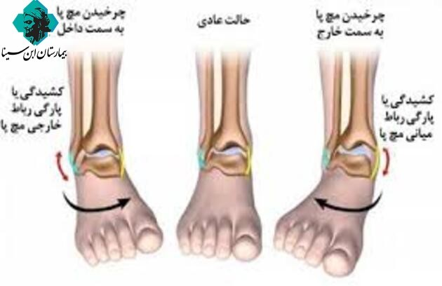

علل رگ به رگ شدن: بیشتر رگ به رگ شدن مچ پا در اثر انجام حرکات سریع افتادن در یک گودال بالا و پایین رفتن از یک پله ویا کارهای ساده مانند بیرون امدن از رختخواب و یک اتفاق ورزشی رخ می دهد.غالبا موقع رگ به رگ شدن مچ پا به سمت بیرون می چرخد هنگامی که رباط های خارج مچ پا کشیده و یا پاره میشوند این مشکل بوجود می آید.
